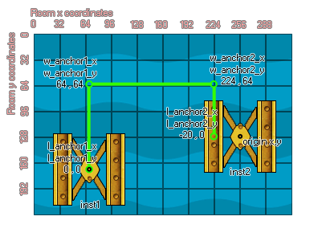

physics_joint_pulley_create(inst1, inst2, w_anchor1_x, w_anchor1_y, w_anchor2_x, w_anchor2_y, l_anchor1_x, l_anchor1_y, l_anchor2_x, l_anchor2_y, ratio, max_len1, max_len2, col)
| Argument | La description |
|---|---|
| inst1 | La première instance à se connecter avec l'articulation |
| inst2 | La deuxième instance pour se connecter avec l'articulation |
| w_anchor1_x | La coordonnée x où la première partie de l'articulation est ancrée, dans le monde du jeu |
| w_anchor1_y | La coordonnée y où la première partie de l'articulation est ancrée, dans le monde du jeu |
| w_anchor2_x | La coordonnée x où la seconde partie de l'articulation est ancrée, dans le monde du jeu |
| w_anchor2_y | La coordonnée y où la seconde partie de l'articulation est ancrée, dans le monde du jeu |
| l_anchor1_x | La coordonnée x locale où l'articulation 1 est ancrée à la première instance |
| l_anchor1_y | La coordonnée y locale où l'articulation 1 est ancrée à la première instance |
| l_anchor2_x | La coordonnée locale x où l'articulation 2 est ancrée à la seconde instance |
| l_anchor2_y | La coordonnée y locale où l'articulation 2 est ancrée à la seconde instance |
| ratio | Définit le rapport de vélocité entre deux instances |
| col | Si les deux instances peuvent entrer en collision (vrai) ou non (faux) |
Retourne: index de l'articulation
L'articulation de la poulie est utilisée pour relier deux instances dans le monde de la physique de telle sorte que le mouvement d'une influence directement le mouvement de l'autre. Ces articulations sont d'abord ancrées dans l'espace du monde en deux points, chacun relié à une instance en son centre de masse. Cela peut être modifié en définissant les coordonnées de l'ancre locale x / y par rapport à l'origine de l'instance, ce qui signifie que la connexion réelle de l'instance au point d'ancrage du monde physique peut être décalée ailleurs que son origine. L'image suivante illustre ceci:

Si vous regardez inst2 vous pouvez voir que son point d'ancrage local a été décalé de 20 pixels à la "gauche" de son origine (Rappelez-vous! Les points d'ancrage mondiaux sont définis en utilisant les coordonnées de la pièce, tandis que les points d'ancrage locaux sont origine de l'instance). Vous pouvez également spécifier un rapport pour l'articulation de poulie, qui indique à un côté ou à l'autre de se déplacer plus rapidement, avec une valeur inférieure à 1, ce qui accélère le déplacement de la première instance (EG 0,5 le déplace deux fois plus vite). la seconde instance se déplace plus vite (EG 2 le fera bouger deux fois plus vite).
Comme pour tous les joints, si vous définissez la valeur "col" sur true alors les deux instances peuvent interagir et entrer en collision les unes avec les autres, mais seulement si elles ont des événements de collision, mais si elle est définie sur false, ils ne vont pas entrer en collision, peu importe quoi.
var t_fix, inst1, inst2;
t_fix = physics_fixture_create();
physics_fixture_set_circle_shape(t_fix, 20);
inst1 = instance_create_layer(150, room_height - 90, "Instances",
obj_Block);
inst2 = instance_create_layer(300, room_height - 90, "Instances",
obj_block);
physics_fixture_bind(t_fix, inst1);
physics_fixture_bind(t_fix, inst2);
physics_joint_pulley_create(inst1, inst2, 150, room_height - 140,
300, room_height - 140, 0, 0, 0, 0, 2, 0);
physics_fixture_delete(t_fix);
Le code ci-dessus crée et définit un nouvel appareil, crée deux instances de "obj_Block", puis les lie deux fois. Il se passe ensuite de définir un joint de poulie entre ces instances, sans décalage pour les articulations, un rapport de 2: 1 (ce qui signifie que inst2 se déplace plus vite). Aucune collision ne se produit entre les deux instances dans la poulie.